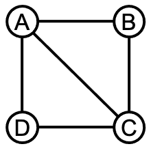
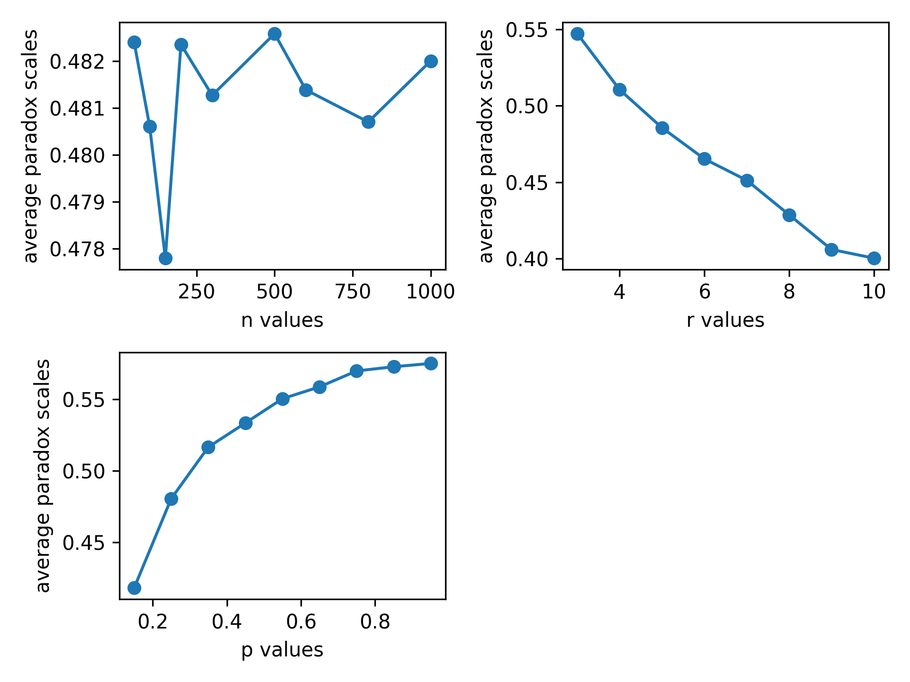

1 社会网络基础1.1 背景问题1.2 计算实践1.2.1 聚集系数与嵌入性1.2.1.1 作业描述与算法思路1.2.1.2 编程实现与要点说明1.2.2 友谊悖论的验证1.2.2.1 作业描述与算法思路1.2.2.2 编程实现与要点说明1.2.2.3 结果与分析
“网络”由节点组成，节点之间可能有边相连。网络常常是对社会的一种有效抽象，节点代表社会中的行动者，边代表行动者之间的联系。
我们可以用一个矩阵（称为邻接矩阵）来表示网络，在程序中一般就是对应一个二维数组。邻接矩阵在
这个矩阵就表示如下一个网络（或图），节点符号A，B，C，D，分别对应矩阵的第1，2，3，4行和列。

一个节点与自己总是没有边的，因此，矩阵从左上到右下的对角线上都是
基于图的邻接矩阵，我们可以通过计算得到对应社会网络的一些结构信息。例如，把一行内的值相加，就可以得到，该行对应的人有多少朋友。另一个例子是矩阵的乘幂，例如
利用这些计算操作，我们可以对网络的性质做出分析，这可以用以检验和社会网络相关的理论假设。作业“聚集系数和嵌入性”就是网络分析的一个例子。另一个作业则检验了社会网络学说的一个理论假设，即“友谊悖论”。
本次作业的主要任务是计算某一社会网络中，每个节点的聚集系数，以及每条边的嵌入性。
在一个网络中，不同人的社交密度或强度（intensity）不一样，有的人把自己的朋友聚集起来的能力很强——ta的朋友往往互相之间也认识。我们用“聚集系数”来刻画这一现象。节点
计算聚集系数的基本思路如下：我先分析邻接矩阵，用一个字典变量friend_dict存储“谁是谁的朋友”，字典的键（key）i指的是节点friend_dict存储的信息验证，他们俩是否为“直接朋友”。节点
两个人之间的关系也有性质上的差别，有的关系深深嵌入了周围的社交圈中——不仅他们俩是朋友关系，而且他们俩的共同好友很多。我们用“嵌入性”来刻画这一现象。边
计算嵌入性时，我一一分析网络中的边。对于边friend_dict完成的。
首先，我们读取样本数据文件，把文件里的矩阵数据存储在一个numpy 2d-array A里。
281import numpy as np2
3def arrayGen(filename):4 f = open(filename, 'r')5 r_list = f.readlines()6 f.close()7 A = []8 for line in r_list:9 if line == '\n':10 continue11 line = line.strip('\n')12 line = line.strip()13 row_list = line.split()14 for k in range(len(row_list)):15 row_list[k] = row_list[k].strip()16 row_list[k] = int(row_list[k])17 A.append(row_list)18 n = len(A[0])19 print('输入矩阵路径：%s' % filename)20 A = np.array(A)21 return A, n22
23try:24 filename = input('请输入邻接矩阵文件名（如net3.txt）：')25 A, n = arrayGen('./input/%s' % filename)26except:27 print('输入错误，使用默认文件net3.txt。')28 A, n = arrayGen('./input/net3.txt')分析这一网络，我们把“谁是谁的朋友”存储在一个字典变量friend_dict里，字典的键（key）
61friend_dict = {}2for i in range(n):3 friend_dict[i] = []4 for j in range(n):5 if A[i][j] == 1:6 friend_dict[i].append(j)接着，我再两两分析节点friend_dict存储的信息验证，他们俩是否为“直接朋友”。以节点PossTriCl里，这些人中的直接朋友数存储在变量TriCl里。聚集系数ClCo_dict里。
151ClCo_dict = {} # ClCo表示clustering coefficient2for (person, friend_list) in friend_dict.items():3 TriCl = 04 for x in range(len(friend_list)):5 friend1 = friend_list[x]6 for y in range(x+1, len(friend_list)):7 friend2 = friend_list[y]8 if A[friend1][friend2] == 1:9 TriCl += 110 PossTriCl = len(friend_list) * (len(friend_list) - 1) / 211 if PossTriCl == 0:12 ClCo = 013 else:14 ClCo = TriCl / PossTriCl15 ClCo_dict[person] = ClCo最后，我们在控制台里打印出各节点聚集系数的情况。
101print()2print('clustering coefficient as following:')3ClCo_list = list(ClCo_dict.items())4ClCo_list.sort(key = lambda x:x[1], reverse = True)5if len(ClCo_dict) < 10:6 for item in ClCo_list:7 print('node', str(item[0]) + ':', '%.2f' % item[1])8else:9 for item in ClCo_list[0:10]:10 print('node', str(item[0]) + ':', '%.2f' % item[1])控制台输出的一个例子如下（由于样本数据较大，仅输出聚集系数排名前十的节点）。
141>>> 请输入邻接矩阵文件名（如net3.txt）：net3.txt2>>> 输入矩阵路径：./input/net3.txt3>>>4>>> clustering coefficient as following:5>>> node 16: 1.006>>> node 34: 1.007>>> node 23: 0.678>>> node 29: 0.679>>> node 1: 0.5010>>> node 8: 0.5011>>> node 22: 0.5012>>> node 27: 0.5013>>> node 31: 0.5014>>> node 36: 0.50
接着计算网络中各边的嵌入性。利用friend_dict遍历所有边、计算两个人的共同朋友数。
81embd_dict = {}2for (person, friend_list) in friend_dict.items():3 for friend_a in friend_list:4 if friend_a > person:5 embd_dict[person, friend_a] = 06 for friend_b in friend_dict[friend_a]:7 if friend_b in friend_list:8 embd_dict[person, friend_a] += 1输出结果到控制台。
141print()2print('embeddedness as following:')3embd_list = list(embd_dict.items())4embd_list.sort(key = lambda x:x[1], reverse = True)5if len(embd_list) < 10:6 for item in embd_list:7 print('edge', end = ' ')8 print(item[0], end = '')9 print(':', str(item[1]))10else:11 for item in embd_list[0:10]:12 print('edge', end = ' ')13 print(item[0], end = '')14 print(':', str(item[1]))由于样本数据较大，仅输出嵌入性排名前十的边。
111>>> embeddedness as following:2>>> edge (2, 13): 43>>> edge (0, 10): 34>>> edge (2, 25): 35>>> edge (2, 31): 36>>> edge (4, 10): 37>>> edge (13, 25): 38>>> edge (13, 31): 39>>> edge (0, 4): 210>>> edge (0, 27): 211>>> edge (1, 14): 2
本次作业的主要任务是验证友谊悖论。这一悖论说的是，现实中多数人一般都感到朋友的朋友多于自己的朋友；尽管，直观上我们会觉得，既然有人觉得朋友的朋友多于自己的朋友，另一些人就会觉得朋友的朋友少于自己的朋友。
验证这一悖论，要在某个社会网络中进行。为了得到亟待验证的社会网络，一个方法当然是以现实生活的数据为基础、进行抽象和转化，我们在这次作业中采取的是另一个方法：基于“小世界”现象，生成一系列的网络。社会科学以“小世界”为主题的研究颇多，这些成果保证，我们生成的社会网络是对真实世界的合理模拟。
“小世界”现象指的是，邻接矩阵中任意两个点之间，都有一条很短的路径可以通达。之所以“小世界”现象存在，是因为社会网络有如下两个性质：
改变初始规则度数
为了检验某一网络是否存在友谊悖论，我一一检查网络中的每一节点。对于节点
首先，我们需要一个生成社会网络的函数neighbor_generator：输入总节点数n、初始规则度数r、随机调整边占比p，这个函数会输出一个表示社会网络的矩阵matr（numpy 2d-array）。
xxxxxxxxxx31def neighbor_generator(n, r, p):2 file = open('./output/generator_logs/{}'.format(time.strftime("%H:%M:%S")), 'w')3 matr = np.zeros((n,n))初始规则边的建立：每一节点与相邻
xxxxxxxxxx271 file.write('Generating an orderly matrix with homophilous links...\n')2 edge_list = []3 for i in range(0,n):4 j_list = [(i + x) % n for x in range(1, int(r/2 + 1 + r % 2))]5 for j in j_list:6 matr[i][j] = 17 matr[j][i] = 18 if j > i:9 edge_list.append([i,j])10 else:11 edge_list.append([j,i])12 file.write('Writing the list of node pairs which do not have an edge...\n')13 empt_list = []14 for i in range(0,n):15 if i % 100 == 0:16 file.write('%i nodes processed...' % i)17 for j in range(i+1,n):18 if matr[i][j] == 0:19 empt_list.append([i,j])20 file.write('For now, number of edges in Matrix A: %i\n' % np.sum(matr))21 if r % 2 != 0: 22 for i in range(0, n-1, 2):23 matr[i][i+1] = 024 matr[i+1][i] = 025 edge_list.remove([i, i + 1])26 empt_list.append([i, i + 1])27 file.write('Number of edges in Matrix A: %i\n' % np.sum(matr))随机调整边：对于已建立的规则边（存储在exc_edge中），比例为p的边被删除，并随机在无关系的两个节点之间（存储在exc_empt中）生成新边。
xxxxxxxxxx91 file.write('Introducing randomness...\n')2 exc_edge = random.sample(edge_list, int(n * r * p / 2))3 exc_empt = random.sample(empt_list, int(n * r * p / 2))4 for item in exc_edge:5 matr[item[0]][item[1]] = 06 matr[item[1]][item[0]] = 07 for item in exc_empt:8 matr[item[0]][item[1]] = 19 matr[item[1]][item[0]] = 1输出矩阵
xxxxxxxxxx21 np.savetxt('./output/generator_logs/neighbor_original_{}'.format(time.strftime("%H:%M:%S")),matr,fmt='%i')2 return matr除此之外，我们还需要一个验证友谊悖论的函数paradox：输入一个给定的矩阵，输出一个bool值，即它是否满足友谊悖论。
xxxxxxxxxx11def paradox(matr, n):我先把“谁是谁的朋友”存储在字典变量fr_dict中，再用这个字典变量计算：节点dg_dict[i]['self']；ta邻居的平均度数，存储在dg_dict[i]['nb']。
xxxxxxxxxx201 fr_dict = {}2 dg_dict = {}3 # generate fr_dict to store who's whose friend4 for i in range(0, n):5 fr_dict[i] = []6 for j in range(0, n):7 if matr[i][j] == 1:8 fr_dict[i].append(j)9 # generate the degrees of individuals10 for i in range(0, n):11 dg_dict[i] = {}12 dg_dict[i]['self'] = len(fr_dict[i])13 # generate the average degrees of neighbors14 for i in range(0, n):15 dg_dict[i]['nb'] = 016 for friend in fr_dict[i]:17 if fr_dict[i] == []:18 dg_dict[i]['nb'] = 019 else:20 dg_dict[i]['nb'] += dg_dict[friend]['self'] / len(fr_dict[i])如果节点pdScale > 0.55），这一网络就存在友谊悖论。
xxxxxxxxxx61 pdIndex = 02 for i in range(0, n):3 if 1.1 * dg_dict[i]['self'] < dg_dict[i]['nb']:4 pdIndex += 15 pdScale = pdIndex / n6 return [pdScale, pdScale > 0.5]由于生成矩阵使用了随机数，随机过程的干扰可能导致单次生成的矩阵是一个特殊情况，对验证结论产生很大影响。因此，我们还需要一个计算友谊悖论期望值的函数pdE_calculator：输入一组特定的自变量（总节点数n、初始规则度数n、随机调整边占比n），运行矩阵生成函数一定次数loopCount，计算出现友谊悖论的节点比例pdScale的平均值，我们就得到该网络的友谊悖论期望值pdE。
xxxxxxxxxx201def pdE_calculator(n, r, p, loopCount = 100): # paradox expectation2 k = 03 pdSum = 04 while True:5 matr = neighbor_generator(n, r, p)6 pdScale = paradox(matr, n)[0]7 k += 18 pdSum += pdScale9 if k == int(loopCount):10 print('given n = %i, r = %i, p = %.2f, the paradox scale has been successfully calculated' % (n, r, p), end = '\n') 11 break12 if n >= 500 or loopCount >= 300:13 if k == 1:14 print('wait a few seconds for the computer to process...', end ='\r')15 if n >= 500 and k % int(5000 / n) == 0 and k > 10:16 print('%i out of %i rounds have been successfully runned........' % (k, loopCount), end = '\r')17 if loopCount >= 300 and k % 100 == 0 and k > 300:18 print('%i out of %i rounds have been successfully runned........' % (k, loopCount), end = '\r')19 pdE = pdSum / loopCount20 return pdE除此之外，我还定义了一个输出结果的函数pdOutput，便于反复调用。输入一组自变量值parameterList和对应的友谊悖论验证结果pdEList，它能在控制台打印结果、在csv文件中写入结果、使用matplotlib绘图。
xxxxxxxxxx201def pdOutput(parameter, parameterList, pdEList, f):2 print('Paradox scales of different %s values as following...' % parameter)3 f.write('%s,' % parameter)4 for i in parameterList:5 print(i, end = '\t')6 f.write(str(i) + ',')7 print()8 f.write('\nParadox Expectation,')9 for pd in pdEList:10 print('%.3f' % pd, end = '\t')11 f.write('%.3f' % pd + ',')12 print()13 f.write('\n')14 xPoints = np.array(parameterList)15 yPoints = np.array(pdEList)16 plotNumDict = {'n' : 1, 'r' : 2, 'p' : 3}17 plt.subplot(2, 2, plotNumDict[parameter])18 plt.plot(xPoints, yPoints, marker = 'o')19 plt.xlabel('%s values' % parameter)20 plt.ylabel('average paradox scales')以下是主程序
xxxxxxxxxx51import random2import os3import matplotlib.pyplot as plt4import numpy as np5import time先准备好记录输出的csv文件。
xxxxxxxxxx71resultDir = './output'2if os.path.isdir(resultDir): 3 pass4else:5 os.makedirs(resultDir)6fname = './output/friendship paradox.csv'7f = open(fname, 'w')我们先来验证，不同的网络规模pdMean函数，设定loopCount为100，计算发生友谊悖论的比例，结果存储在n_pdList里。
xxxxxxxxxx131n_start = time.time()2print('*** Calculating paradox scales given different n values ***')3n_list = [50, 100, 150, 200, 300, 500, 600, 800, 1000] # more than 7 groups to make the tendency more explicit4n_pdList = []5for n in n_list:6 n_pdE = pdE_calculator(n = n, r = 5, p = 0.25)7 n_pdList.append(n_pdE)8pdOutput('n', n_list, n_pdList, f)9n_end = time.time()10n_span = n_end - n_start11n_time = '%i min %i s' % (n_span // 60, n_span % 60)12print('Paradox scales calculating of different n values cost', n_time)13print()同理，我们再来验证，初始规则度数不同时，友谊悖论发生期望有何不同。给定loopCount为100。
xxxxxxxxxx121print('*** Calculating paradox scales given different r values ***')2r_list = [3, 4, 5, 6, 7, 8, 9, 10]3r_pdList = []4for r in r_list:5 r_pdE = pdE_calculator(n = 100, r = r, p = 0.25)6 r_pdList.append(r_pdE)7pdOutput('r', r_list, r_pdList, f)8r_end = time.time()9r_span = r_end - n_end10r_time = '%i min %i s' % (r_span // 60, r_span % 60)11print('Paradox scales calculating of different r values cost', r_time)12print()同理，我们最后来验证，随机调整边占比
注意到，loopCount，保证友谊悖论节点比例的平均值能达致稳定。因此，我将循环数设为
xxxxxxxxxx131print('*** Calculating paradox scales given different p values ***')2p_list = [0.15, 0.25, 0.35, 0.45, 0.55, 0.65, 0.75, 0.85, 0.95]3p_pdList = []4for p in p_list:5 p_loop = 75 / (1 - p) 6 p_pdE = pdE_calculator(100, 5, p, p_loop)7 p_pdList.append(p_pdE)8pdOutput('p', p_list, p_pdList, f)9p_end = time.time()10p_span = p_end - r_end11p_time = '%i min %i s' % (p_span // 60, p_span % 60)12print('Paradox scales calculating of different p values cost', p_time)13print()| n | 50 | 100 | 150 | 200 | 300 | 500 | 600 | 800 | 1000 |
|---|---|---|---|---|---|---|---|---|---|
| Paradox Expectation | 0.482 | 0.481 | 0.478 | 0.482 | 0.481 | 0.483 | 0.481 | 0.481 | 0.482 |
| r | 3 | 4 | 5 | 6 | 7 | 8 | 9 | 10 | |
| Paradox Expectation | 0.547 | 0.511 | 0.486 | 0.465 | 0.451 | 0.429 | 0.406 | 0.4 | |
| p | 0.15 | 0.25 | 0.35 | 0.45 | 0.55 | 0.65 | 0.75 | 0.85 | 0.95 |
| Paradox Expectation | 0.418 | 0.48 | 0.517 | 0.533 | 0.55 | 0.559 | 0.57 | 0.573 | 0.575 |

进一步的验证，还需要优化模型、增加取值、增加pdE_calculator()循环数loopCount后，进行严谨的统计学分析。我们的初步结论是，当